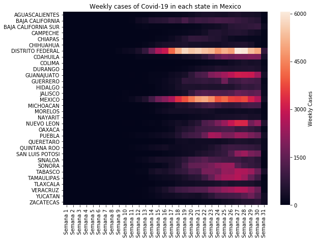
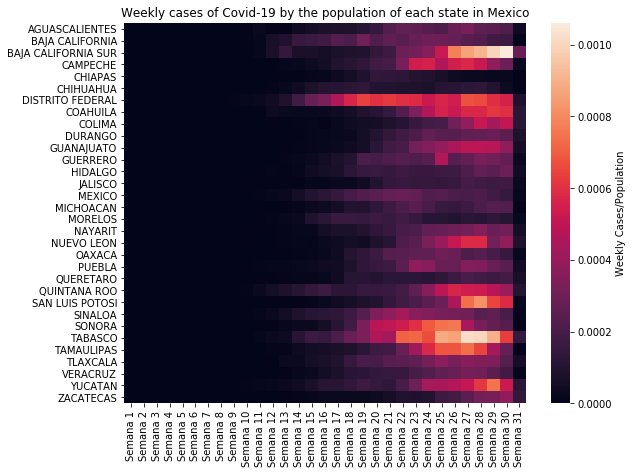
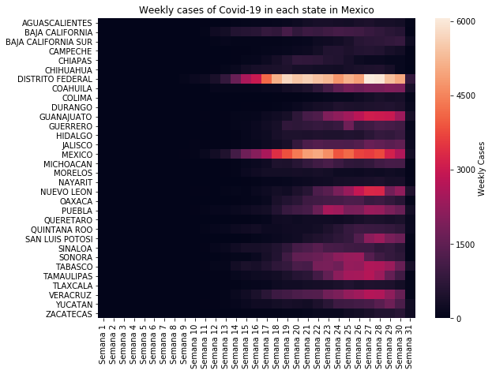
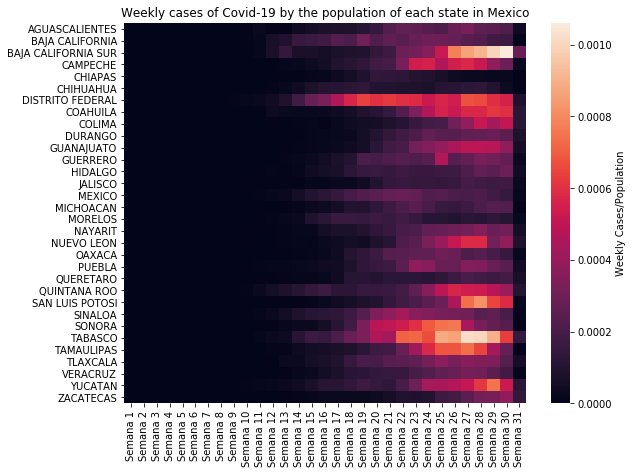
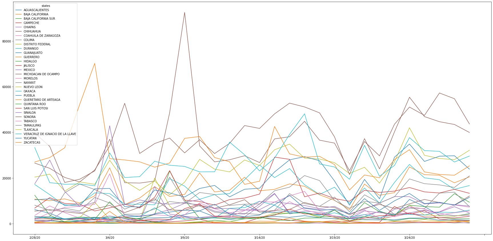
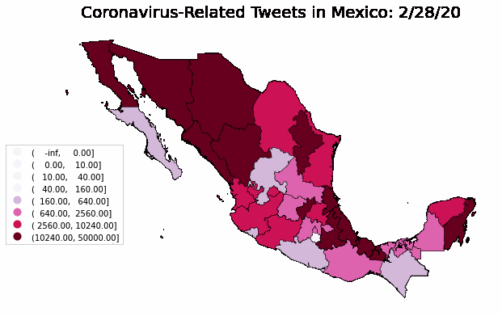
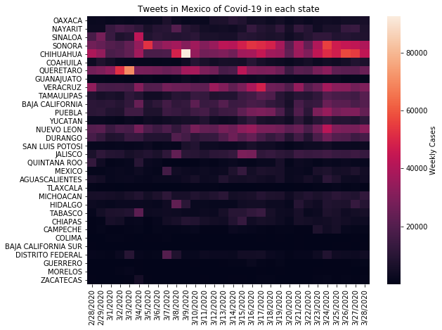
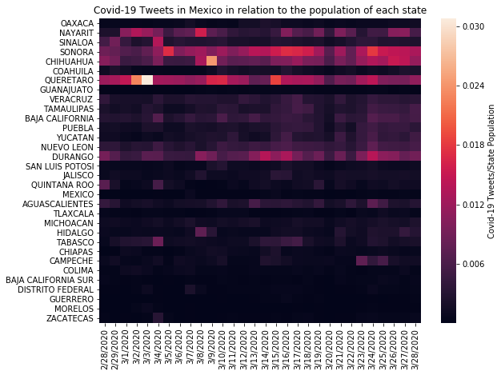

Introduction
Welcome to Covid-19 in Mexico. In this entry for the CdeCMX Challenge, which pursues different coding challenges in different areas of expertise, we developed ways of analyzing Covid-19 data through Tweets and cases per municipality in Mexico. The following are our visualizations and results.
SARS-CoV-2 all over the world
As you may know in 2020 a pandemic started, this sadly has had effects all over the world. For this reason, a code was develop in order to show the growth rate of cases in Mexico and the world.
The world

Mexico
 



SARS-CoV-2 and twitter
As we have seen in the last months, a significant part of this pandemic is the exchange of information. However, one question has remained: how many people have relayed information about the coronavirus, and what was the "sentiment" behind it?
Utilizing a dataset of around 1 million tweets from Mexico, we have developed several ways of analysing the data, such as from where in Mexico the tweets came from and what the feelings of people are based on the tweets sent.
Twitter geographical data
Utilizing the previously mentioned dataset, we made visualizations of the daily number of Covid-19 Tweets by state in Mexico. The graph shows that the north part of Mexico has a higher number of tweets
  Twitter sentiment analysis
Using the same dataset as before, a sentiment analysis was implemented. In the next graphs, each point represents a tweet, the number of cases in that day, its sentiment score, and the times it was retweeted. In the sentiment score, a 1.0 score means the tweet had a maximum positive value, and a 0.0 score means the tweet had a minimum positive value. Most of the tweets have a "negative" sentiment, which is to be expected. Also, as the chart shows, when Covid-19 cases rise, the number of tweets related to it rises as well. We also see an increase in the quantity of tweets with a negative sentiment.
What about the future?
Analysing data is not an easy task. Even though the methods keep improving every day, our interpretations and predictions will always be uncertain. For this reason, in the future, we would like to compare this data with the next months data, hoping it will be after the release of a vaccine in Mexico. This way we could see if it has a mitigating effect over the general sentiment of the population that tweeted during the high of the pandemic, and how the general situation of people changed.
Stay safe and keep your distance!
Until the next time.
Resources
Singh, Lisa & Bansal, Shweta & Bode, Leticia & Budak, Ceren & Chi, Guangqing & Kawintiranon, Kornraphop & Padden, Colton & Vanarsdall, Rebecca & Vraga, Emily & Wang, Yanchen. (2020). A first look at COVID-19 information and misinformation sharing on Twitter.
Pre-trained sentiment Analysis classifier in spanish.
Rabindra Lamsal. (2020) Coronavirus (COVID-19) Geo-tagged tweets Dataset. IEEE Dataport. Link
The team
Alejandro Miron Jabalera
Bioengineering MajorPhysics Major
Double major in Mathematics and Chemistry